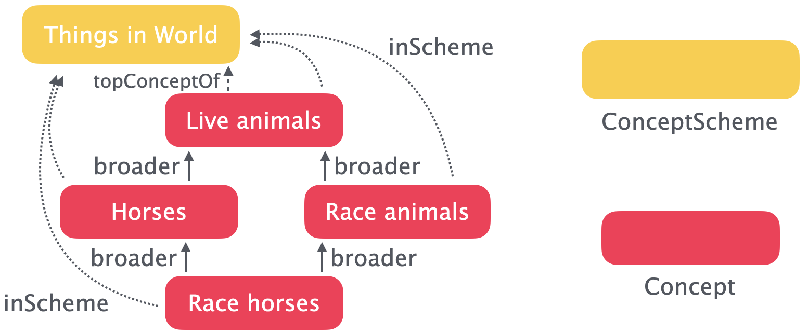
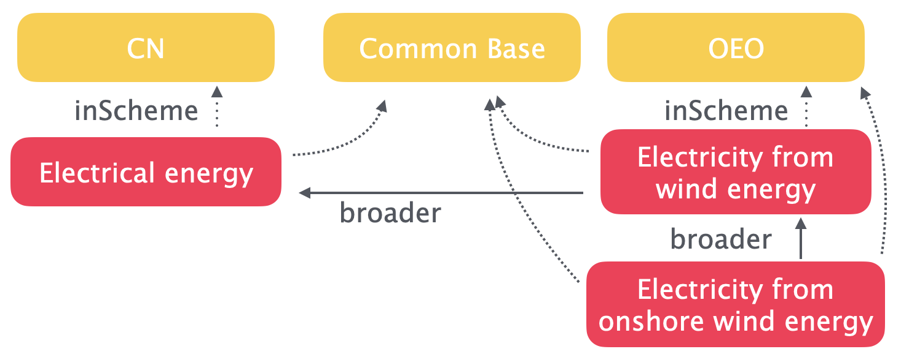
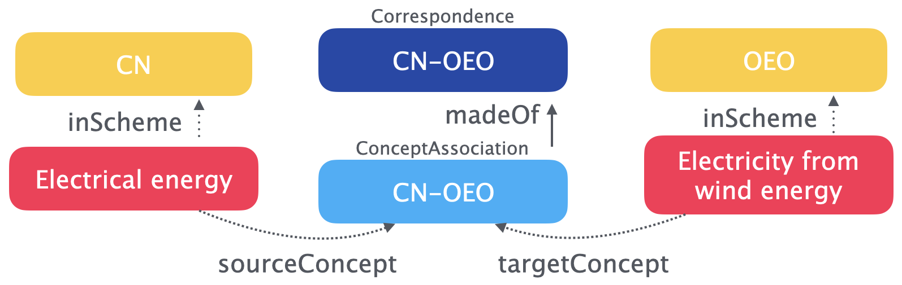
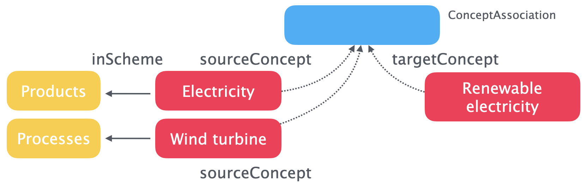

Data Model#
Overview#
The data model PyST has four fundamental classes: SKOS Concept, SKOS ConceptScheme, XKOS Correspondence, and XKOS ConceptAssociation.
Concept and ConceptScheme#
Each Concept belongs to at one ConceptSchema. "Belonging" is given with the Concept.inScheme property.

These Concept relationships in a given ConceptScheme form a graph. Each "root" in the graph is a "top" Concept - i.e. a Concept which has incoming skos:broader relationships, but no outgoing skos:broader relationships. SKOS has a potentially confusing way of encoding skos:broader and skos:narrower, because the semantic triple A skos:broader B means that object A has a relationship to a broader object B, not that A is broader than B (just the opposite!). SKOS uses skos:topConceptOf to mark these "top" Concept objects.
ConceptScheme graphs are directed acyclic graphs. They are directed because their edges (A skos:broader B) have direction and are not symmetric; they are acyclic because of their nature in describing taxonomies which always get broader as one goes "up" the hierarchy towards the "top" Concepts.
A PyST deployment will normally have many ConceptScheme graphs, and these individual graphs can be linked in several ways. Concepts can belong to more than one ConceptScheme - for example, we will be using the Combined Nomenclature or CN as a base classification for products, but supplementing it with more specific graphs (like the Open Energy Ontology or OEO) when more detail is needed. As is discussed below, we can't have hierarchical relationships which cross ConceptScheme graphs, but if introduce a third common ConceptScheme we can create hierarchies which span input ConceptSchemes:

ConceptAssociation and Correspondence#
ConceptAssociation and Correspondence are another fundamental type of relationship we can put in the graph. Just like the SKOS term ConceptScheme serves as an organizational unit for Concepts, the XKOS term Correspondence is an organizational unit for these ConceptAssociations.

While the XKOS standard does allow M-to-N mappings (i.e. multiple concepts in one concept scheme mapping to multiple concepts in another concept scheme), we require that each concept in the source concept scheme be mapped separately to the appropriate target concepts.
One frustration of the current XKOS standard is that no additional properties for describing the qualities of ConceptAssociation are offered: "In this version, XKOS does not define any properties or sub-classes for xkos:Correspondence and xkos:ConceptAssociation in order to model these different types of correspondences. This may be added in a future version." (Source). This means that if we want to indicate the quality of a mapping between two Concepts in addition to their membership in a ConceptAssociation, we would need to create a separate associative relationship. Note that this means that these associative properties will not be linked directly to the ConceptAssociation instance.
We don't assume reciprocity for ConceptAssociations - i.e. if source A is mapped to target B, it doesn't mean that source B is mapped to target A.
Conditional ConceptAssociation#
In certain cases a Concept in scheme A can correspond to a Concept in scheme B, but only when it is paired with another Concept from scheme C. For example, A:electricity is equivalent to B:renewable_electricity when it is produced by C:wind_turbine.
We will slightly abuse the ConceptAssociation class to meet this modelling need by allowing ConceptAssociation to link three ConceptSchemes. In this case, each ConceptAssociation should have two sourceConcepts and one targetConcept.

Note that conditionality here is implicit - it is not given by a specific property but only because there are two sourceConcepts.
Warning
Our usage here differs from XKOS best practices. Please reach out to info@cauldron.ch if you have alternative ideas on how to implement conditional association.
Hierarchical and associative Concept relationships#
A hierarchical relationship is a skos:broader or skos:narrower (or skos:broaderTransitive/skos:narrowerTransitive) relationship within a ConceptScheme taxonomy. An associative relationship crosses from one ConceptScheme to another, or from one "branch" of a ConceptScheme to another, and uses the SKOS properties skos:related, skos:exactMatch, skos:closeMatch, skos:relatedMatch, skos:broadMatch, and skos:narrowMatch.
You shouldn't specify associative relationships for two concepts which are related through a transitive chain of skos:broader relationships. PyST does some basic checks to enforce this distinction, though because we allow Concepts to belong to more than one ConceptScheme it's difficult to do comprehensive checks.
General constraints and assumptions#
PyST is a opinionated software - it puts additional constraints on the SKOS and XKOS ontologies to ensure consistency and usability.
PyST uses the open-world assumption in its logic. The open-world assumption is that there are facts which are true but are not stated in our system. So, for example, just because our system doesn't have a skos:broader relationship or a ConceptAssociation between two Concepts doesn't mean that those links don't exist - just that we don't know abot them yet.
There are a few general constraints which are applied to all classes:
- We assume that
Conceptswithin aConceptSchemehave a strictly transitive hierarchy - e.g. ifAis broader thanB, andBis broader thanC, thenAis always broader thanC. There is therefore no need to specifybroaderTransitiveornarrowerTransitive, as these are implicit in the taxonomy graph. Similarly, asbroaderandnarrowerare reciprocal, API inputs should only specifybroaderrelationships - giving both sides of abroader/narrowerrelationship will raise aDuplicateRelationshiperror. - Incoming data must be JSON-LD in the JSON-LD 1.1 expanded form. Expanded form means that there is no
@contextsection of the JSON-LD document.
Note
If you are using rdflib, you may run into trouble with nested namespaces. Specifying version=1.1 during parsing (i.e. rdflib.Graph().parse(..., version="1.1") or reading and re-serializing with PyLD should work.
- All string literals must specify a language and can specify a direction. In other words,
"ceci n'est pas une pipe"is not allowed - you must instead give{"@language": "fr", "@value": "ceci n'est pas une pipe"}. - Only one
skos:prefLabeland oneskos:definitionper language code are allowed. - If specifying a version using
owl:versionInfo, only one value is allowed.
Tracking changes#
We follow the SKOS Primer guidance on documentary notes for the fields skos:changeNote, skos:editorialNote, and skos:historyNote:
skos:changeNotedocuments fine-grained changes to a concept, for the purposes of administration and maintenance, e.g. "Moved from under 'fruits' to under 'vegetables' by Horace Gray"skos:editorialNotesupplies information that is an aid to administrative housekeeping, such as reminders of editorial work still to be done, e.g. "Check spelling with John Doe"skos:historyNotedescribes significant changes to the meaning or the form of a concept, e.g. "estab. 1975; heading was: Cruelty to children [1952-1975]"
All three of these notes are required to be RDF resources instead of string literals, and in addition to their values (rdf:value), they must also include a creator (dcterms:creator) and an issuance timestamp (dcterms:issued). Here is an example:
{
"http://purl.org/dc/terms/creator": [{"@id": "http://example.com/john.doe"}],
"http://purl.org/dc/terms/issued": [
{"@type": "http://www.w3.org/2001/XMLSchema#date", "@value": "1999-01-23"}
],
"http://www.w3.org/1999/02/22-rdf-syntax-ns#value": [
{"@language": "en", "@value": "Moved from under 'fruits' to under 'vegetables'"}
],
}
Publication status#
SKOS and XKOS don't provide constructs for tracking status. We have chosen to use a subset of the BIBO ontology, and support three different status options:
- draft (
http://purl.org/ontology/bibo/status/draft) - accepted (
http://purl.org/ontology/bibo/status/accepted) - rejected (
http://purl.org/ontology/bibo/status/rejected)
The predicate verb is http://purl.org/ontology/bibo/status.
ConceptScheme#
We impose the following additional constraints on ConceptScheme objects:
- At least one
skos:prefLabeland oneskos:definitionare required bibo:status,dcterms:created,owl:versionInfoare required- Exactly one
owl:versionInfovalue is specified - At least one definition (
skos:definition) is given - Instead of supplying a (very long) list of
skos:hasTopConceptconcept references, please instead specifyskos:topConceptOfon theConceptinstances.
Here is a minimal ConceptScheme example:
{
"@id": "http://data.europa.eu/xsp/cn2024/cn2024",
"@type": [
"http://www.w3.org/2004/02/skos/core#ConceptScheme"
],
"http://purl.org/dc/terms/created": [
{
"@type": "http://www.w3.org/2001/XMLSchema#dateTime",
"@value": "2023-10-11T13:59:56"
}
],
"http://purl.org/dc/terms/creator": [
{
"@id": "http://publications.europa.eu/resource/authority/corporate-body/ESTAT"
},
{
"@id": "http://publications.europa.eu/resource/authority/corporate-body/TAXUD"
}
],
"http://www.w3.org/2002/07/owl#versionInfo": [
{
"@value": "2024"
}
],
"http://purl.org/ontology/bibo/status": [
{
"@id": "http://purl.org/ontology/bibo/status/accepted"
}
],
"http://www.w3.org/2004/02/skos/core#prefLabel": [
{
"@value": "Combined Nomenclature, 2024 (CN 2024)",
"@language": "en"
},
{
"@value": "Nomenclatura Combinada, 2024 (NC 2024)",
"@language": "pt"
}
],
"http://www.w3.org/2004/02/skos/core#definition": [
{
"@value": "The main classification for the European ITGS (International trade in goods statistics) is the Combined Nomenclature (CN). This is the primary nomenclature as it is the one used by the EU Member States to collect detailed data on their trading of goods since 1988. Before the introduction of the CN, ITGS were based on a product classification called NIMEXE. The CN is based on the Harmonised Commodity Description and Coding System (managed by the World Customs Organisation (WCO). The Harmonised System (HS) is an international classification at two, four and six-digit level which classifies goods according to their nature. It was introduced in 1988 and, since then, was revised six times: in 1996, 2002, 2007, 2012, 2017 and 2022. The CN corresponds to the HS plus a further breakdown at eight-digit level defined to meet EU needs. The CN is revised annually and, as a Council Regulation, is binding on the Member States.",
"@language": "en"
}
],
"http://www.w3.org/2004/02/skos/core#notation": [
{
"@value": "CN 2024",
"@type": "http://www.w3.org/1999/02/22-rdf-syntax-ns#PlainLiteral"
}
]
}
Concept#
We impose the following additional constraints on Concept objects:
- At least one
skos:prefLabelis required - A
bibo:statusis required - Each
Conceptmust be in at least one known (i.e. in our database already)ConceptScheme.Conceptscan belong to more than oneConceptScheme. Conceptscan be in a relationship with itself. Insert your own joke here.- The use of
skos:noteis discouraged (but not prohibited) in favor of the specificskos:notesubclasses:skos:scopeNote,skos:definition,skos:example,skos:historyNote,skos:editorialNote, andskos:changeNote. Their use should follow the intended use as documented in the SKOS Primer. skos:notationmust be a typed literal - not a string literal - and not include a@languagetag. The default datatype should behttp://www.w3.org/1999/02/22-rdf-syntax-ns#PlainLiteral.- We break from SKOS guidance to prohibit
skos:notationhaving the same value asskos:prefLabel. A notation is 'a string of characters such as "T58.5" or "303.4833" used to uniquely identify a concept within the scope of a given concept scheme'; this definition is inconsistent with lexical labels likeskos:prefLabel, which are human-readable and in a natural language. In our system,skos:prefLabelis required butskos:notationis optional.
Here is a minimal Concept example:
{
"@id": "http://data.europa.eu/xsp/cn2024/010011000090",
"@type": ["http://www.w3.org/2004/02/skos/core#Concept"],
"http://www.w3.org/2004/02/skos/core#inScheme": [
{"@id": "http://data.europa.eu/xsp/cn2024/cn2024"}
],
"http://purl.org/ontology/bibo/status": [
{"@id": "http://purl.org/ontology/bibo/status/accepted"}
],
"http://www.w3.org/2004/02/skos/core#prefLabel": [
{
"@value": "SECTION I - LIVE ANIMALS; ANIMAL PRODUCTS",
"@language": "en"
},
{
"@value": "SEC\u00c7\u00c3O I - ANIMAIS VIVOS E PRODUTOS DO REINO ANIMAL",
"@language": "pt"
}
],
"http://www.w3.org/2004/02/skos/core#notation": [
{
"@value": "I",
"@type": "http://www.w3.org/1999/02/22-rdf-syntax-ns#PlainLiteral"
}
],
"http://www.w3.org/2004/02/skos/core#definition": [
{
"@language": "en",
"@value": "LIVE ANIMALS; ANIMAL PRODUCTS"
}
],
"http://www.w3.org/2004/02/skos/core#topConceptOf": [
{"@id": "http://data.europa.eu/xsp/cn2024/cn2024"}
]
}
Correspondence#
The XKOS ontology provides the Correspondence class definition, which we use follow the XKOS best practice guide. A Correspondence instance is very similar to a ConceptScheme - it provides metadata for a collection of child nodes.
In addition to our generic addition restrictions, Correspondence must have:
- Exactly one
http://purl.org/dc/terms/issuedvalue.
Here is an example of a valid Correspondence in JSON-LD:
{
"@id": "http://data.europa.eu/xsp/cn2024/CN2024_CN2023",
"@type": ["http://rdf-vocabulary.ddialliance.org/xkos#Correspondence"],
"http://rdf-vocabulary.ddialliance.org/xkos#compares": [
{"@id": "http://data.europa.eu/xsp/cn2024"}
{"@id": "http://data.europa.eu/xsp/cn2023"}
],
"http://www.w3.org/2004/02/skos/core#definition": [
{
"@value": "This table is indicative and has no legal value.",
"@language": "en"
}
],
"http://www.w3.org/2004/02/skos/core#prefLabel": [
{
"@value": "Transposition between CN 2024 and CN 2023",
"@language": "en"
}
],
"http://purl.org/dc/terms/issued": [
{
"@type": "http://www.w3.org/2001/XMLSchema#dateTime",
"@value": "2024-07-02T08:41:55"
}
]
}
ConceptAssociation#
We don't impose any additional restrictions outside of the XKOS specification on ConceptAssociation.
XKOS doesn't provide any additional properties ConceptAssociations, but we can use qudt:conversionMultiplier to give 1-N partitioning or allocation constants. Though this isn't the intention of this predicate in QUDT, it domain and range fit, and allocation is similar enough to unit conversion. Please feel free to suggest an alternative if you find something which fits better!
Here is an example of a valid 1-to-N ConceptAssociation in JSON-LD:
{
"@id": "http://data.europa.eu/xsp/cn2024/CN2024_CN2023_010239100080",
"@type": ["http://rdf-vocabulary.ddialliance.org/xkos#ConceptAssociation"],
"http://rdf-vocabulary.ddialliance.org/xkos#sourceConcept": [
{"@id": "http://data.europa.eu/xsp/cn2024/010239000080"}
],
"http://rdf-vocabulary.ddialliance.org/xkos#targetConcept": [
{
"@id": "http://data.europa.eu/xsp/cn2024/010239900080",
"http://qudt.org/3.0.0/schema/qudt/conversionMultiplier": 0.75
},
{
"@id": "http://data.europa.eu/xsp/cn2024/010239100080",
"http://qudt.org/3.0.0/schema/qudt/conversionMultiplier": 0.25
}
]
}
And here is a conditional ConceptAssociation:
{
"@id": "http://example.com/conditional",
"@type": ["http://rdf-vocabulary.ddialliance.org/xkos#ConceptAssociation"],
"http://rdf-vocabulary.ddialliance.org/xkos#sourceConcept": [
{"@id": "http://example.com/A/electricity"},
{"@id": "http://example.com/C/wind_turbine"}
],
"http://rdf-vocabulary.ddialliance.org/xkos#targetConcept": [
{"@id": "http://example.com/B/renewable_electricity"}
]
}